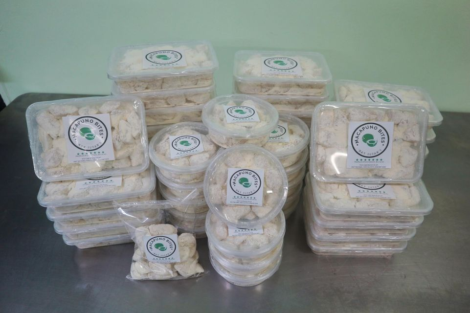

PAMAHALAANG BAYAN NG
SAN MIGUEL, BULACAN
PAMAHALAANG BAYAN NG
SAN MIGUEL, BULACAN
The municipality of San Miguel de Mayumo was established in 1763 by Carlos Agustin Maniquiz, Maria Juana Puno - wife of Carlos Agustin Maniquiz and Miguel Pineda, with Pineda as the first town mayor of San Miguel. Miguel Pineda was a native of Angat, Bulacan who decided to settle permanently in the barrio of San Bartolome (now named Barangay Tartaro). He found the place ideal for hunting and was later chosen as the leader of other settlers. He formed an alliance with Mariano Puno, the recognized leader of the adjacent prosperous village called Santo Rosario (now named Barangay Mandile).
The town was previously part of Pampanga, hence San Miguel's culture having Kapampangan influence. In 1848, the town and the neighbouring barrios, which were then part of Pampanga, were added to the territory of the Province of Bulacan.
Photo courtesy of Philippine Center for Masonic Studies
During the Philippine Revolution in 1897, newly appointed Governor-General Fernando Primo de Rivera decided to crush Emilio Aguinaldo and his troops in Cavite, but Aguinaldo fled to Batangas and joined forces with Gen. Miguel Malvar. The Spaniards continue their pursuit but the troops outwitted them by going to the province of Morong (now Rizal) and finally to Biak-na-Bato in San Miguel, Bulacan. Aguinaldo made the mountain caves into his headquarters.
Aguinaldo's headquarters in San Miguel, BulacanPhoto courtesy of Philippine Center for Masonic Studies
Primo de Rivera soon learned that in spite of rebel setbacks in Cavite the revolution was still in high spirits. He extended his deadline for pardon but few heeded his policy of attraction. He realized too that the people were united in their cause and the revolution could not be contained. Meanwhile, Aguinaldo and his army had eluded capture in Batangas and established a new headquarters in Biak-na-Bato, San Miguel de Mayumo in Bulacan. Here in July, was also established what is known as the “Biak-na-Bato Republic” with a provisional constitution copied from the Cuban constitution of Jimaguayú.
Photo courtesy of Philippine Center for Masonic Studies
During World War II, Japanese Imperial ground troops entered and occupied the town municipality of San Miguel on 1942. Local Filipino troops of the Philippine Commonwealth Army and Philippine Constabulary units retreated into the nearby mountains to become the Bulakeño guerrilla resistance against the Japanese occupation forces until the province's liberation.
San Miguel is a charming municipality in the province of Bulacan, Philippines, known for its rich history, cultural heritage, and natural beauty. As a popular tourist destination, San Miguel offers visitors a wide range of activities, attractions, and experiences that showcase the best of this vibrant and dynamic community.
One of the most notable attractions in San Miguel is the Biak-na-Bato National Park, which is located in the heart of the municipality. This sprawling park is home to a wide variety of plant and animal species, as well as numerous hiking trails, caves, and other natural wonders that make it a favorite destination for nature lovers and outdoor enthusiasts.
In addition to its natural attractions, San Miguel also boasts a rich cultural heritage that is on full display throughout the municipality. From the historic San Miguel Arcangel Church to the San Miguel Museum, visitors can explore the rich history and traditions of this fascinating community and learn about the unique customs and traditions that make San Miguel such a special place.
For those who are looking for a more active vacation, San Miguel offers plenty of opportunities for adventure and excitement. Visitors can go trekking or mountain biking in the nearby hills, enjoy a thrilling zipline ride through the treetops, or take a refreshing swim in the crystal-clear waters of the San Miguel River.
Biak na Bato National Park is a stunning natural wonder located in San Miguel, Bulacan, Philippines. It is a popular tourist destination known for its rich biodiversity, geological formations, and historical significance. The park covers an area of 2,117 hectares, and it is home to a wide range of flora and fauna, including endangered species such as the Philippine Eagle and the Philippine Monkey-eating Eagle.
The park is named after the Biak-na-Bato Cave, a system of caves and rock formations that played a crucial role in the Philippine Revolution against Spanish colonizers in the late 1800s. The park's natural beauty is also a draw for visitors, as it is home to several majestic waterfalls, rivers, and springs. The park's diverse flora and fauna include endemic species such as the Philippine teak, the waling-waling orchid, and the tamaraw, a type of water buffalo found only in the Philippines.
(Click "View Larger map" to get directions)

Mount Manalmon is a popular destination located in the province of Bulacan, Philippines. It is part of the Sierra Madre mountain range and stands at an elevation of 196 meters above sea level. The mountain is a favorite among nature lovers, hikers, and adventure seekers, thanks to its breathtaking views, diverse flora and fauna, and exciting outdoor activities.
One of the most popular activities in Mount Manalmon is hiking. The mountain has several hiking trails that offer visitors a chance to explore the stunning natural beauty of the area. The trails range from easy to difficult, so visitors of all skill levels can enjoy the hike. Along the way, hikers will be treated to breathtaking views of the surrounding landscape, including lush forests, majestic waterfalls, and rolling hills.
(Click "View Larger map" to get directions)
Madlum Cave is a popular tourist destination located in San Miguel, Bulacan, Philippines. It is a natural wonder known for its stunning rock formations, underground rivers, and historical significance. The cave system is a maze of interconnected tunnels and caverns, with a length of approximately 800 meters.
The name "Madlum" is derived from the local word meaning "darkness," which is a fitting name for this mysterious and enchanting cave system. The cave is famous for its impressive stalactites and stalagmites, which have formed over thousands of years, creating a breathtaking and otherworldly atmosphere.
Madlum Cave also played a significant role in Philippine history. During the Philippine Revolution against Spanish colonizers in the late 1800s, the cave was used as a hideout and sanctuary by Filipino revolutionaries. The cave's historical significance is commemorated by a shrine located at the entrance, which honors the revolutionaries who fought for the country's independence.
(Click "View Larger map" to get directions)
Malapad na Parang is a scenic hill located in San Miguel, Bulacan, Philippines. It is a popular destination for nature lovers and hikers, offering stunning views of the surrounding landscape and a chance to experience the beauty of the great outdoors.
At an elevation of 393 meters above sea level, Malapad na Parang is one of the highest points in the area, providing visitors with panoramic views of the countryside. The hill is covered in lush vegetation, with a variety of trees and plants growing on its slopes.
One of the most popular activities in Malapad na Parang is hiking. The hill has several hiking trails that offer visitors a chance to explore the stunning natural beauty of the area. The trails range from easy to difficult, so visitors of all skill levels can enjoy the hike. Along the way, hikers will be treated to breathtaking views of the surrounding landscape, including rolling hills, sprawling farmland, and verdant forests.
(Click "View Larger map" to get directions)

At an elevation of 344 meters above sea level, Mount Gola is a relatively small mountain. However, its location provides stunning views of the countryside, with rolling hills and farmland stretching out as far as the eye can see. The hike up Mount Gola is a popular activity for both locals and tourists, as it offers a chance to experience the beauty of the outdoors while getting some exercise.
The trail up Mount Gola is well-maintained, with several rest stops along the way. The hike takes approximately 1-2 hours, depending on the hiker's fitness level, and is relatively easy, with a gradual incline that is suitable for beginners. Along the way, hikers will be treated to stunning views of the surrounding landscape, including lush green forests, rolling hills, and verdant farmland.
At the summit of Mount Gola, hikers are rewarded with breathtaking views of the countryside. The summit provides a panoramic view of the surrounding landscape, making it a popular spot for photography and sightseeing. Visitors can take in the beauty of the area while enjoying a peaceful picnic or simply taking a moment to appreciate the natural beauty of the Philippines.
(Click "View Larger map" to get directions)

Banal na Bundok, also known as Mount Banal, is a popular hiking destination located in San Miguel, Bulacan, Philippines. It is a favorite among hikers and nature lovers, as it offers breathtaking views of the surrounding landscape and a chance to escape the hustle and bustle of city life.Banal na Bundok is a relatively small mountain, standing at just 297 meters above sea level. However, its location in the middle of farmland and rolling hills provides stunning views of the countryside. The hike up Banal na Bundok is a moderate climb, with some steep sections, making it suitable for intermediate hikers.
(Click "View Larger map" to get directions)
The church was built in the late 18th century, during the Spanish colonial era, and was originally constructed using local materials such as bamboo and nipa palm. However, it was later rebuilt using more durable materials such as bricks and stones.
The architecture of the church is a mix of Baroque and Neoclassical styles, with intricate carvings and designs adorning the facade and interior. The bell tower is a prominent feature of the church, standing tall and proud as a symbol of the faith and dedication of the local community.
Inside the church, visitors can see beautiful works of art, including a wooden statue of San Miguel Archangel, which is the patron saint of the town. The altar is also an impressive sight, with ornate carvings and decorations that add to the overall grandeur of the church.
(Click "View Larger map" to get directions)
San Miguel, Bulacan is a first-class municipality located in the province of Bulacan, Philippines. The town has a rich history and culture, which is reflected in the leaders who have governed it throughout the years.
The government officials of San Miguel, Bulacan have played an important role in shaping the town's history and future. From its first Municipal President to its current Mayor and Vice Mayor, each leader has contributed to the development of the town in their own way.

John "Bong" Alvarez
Vice Mayor
Roderick D.G. Tiongson
Mayor


Gerome DC. Reyes
Municipal Councilor
Mary Joy Ann S. Chico
Municipal Councilor
Romeo C. Dizon
Municipal Councilor
Emmanuel DC. Magtalas
Municipal Councilor
Joseph Noel P. De Guzman
Municipal Councilor
Anika Corrine S. Tan
Municipal Councilor

Mark David C. Maon
Municipal Councilor
Pol David R. Buencamino
SK Chairman
Richard P. Dela Cruz
Municipal Councilor
Mayor Roderick DG. Tiongson
Vice Mayor John A. Alvarez
Coun. Christopher T. Beltran
Coun. Melvin B. Santos
Coun. Gerome DC. Reyes
Coun. Emmanuel DC. Magtalas
Coun. Richard P. Dela Cruz
Coun. Jayvee C. Lacsina
Coun. Mark David C. Maon
Coun. Anika Corinne S. Tan
Mayor Marivee Mendez Coronel
Vice Mayor John A. Alvarez
Coun. Romeo C. Dizon
Coun. Richard P. Dela Cruz
Coun. Christopher T. Beltran
Coun. Bayani P. Tecson
Coun. Ma. Ysabelle Clarisse Anne SM. Bonoan
Coun. Rogelio E. Macasu
Coun. Romeo L. Reyes, Jr.
Coun. Jayvee C. Lacsina
Mayor Roderick DG. Tiongson
Vice Mayor Marivee M. Coronel
Coun. Raul A. Mariano
Coun. Romeo C. Dizon
Coun. Emmanuel DC. Magtalas
Coun. Vincent Abril M. Maniquis
Coun. Anika Corinne DS. Santiago
Coun. Rogelio E. Macasu
Coun. Bayani P. Tecson
Coun. Romeo P. Villacorta
Mayor Roderick D. Tiongson
Vice Mayor Ma. Gemma S. Alcantara
Coun. Josephine C. Buan
Coun. Emmanuel D. Magtalas
Coun. Ernesto S. Sulit
Coun. Raul A. Mariano
Coun. Anika Corrine D. Santiago
Coun. Vincent Abril M. Maniquis
Coun. Marivee M. Coronel
Coun. Romeo C. Dizon
Legend:
Coun. - Councilor (Sangguniang Bayan)
SK - Sangguniang Kabataan (Youth Council
)
San Miguel, Bulacan is a town in the Philippines known for its exceptional food products. The town offers offers a variety of unique and delicious food products, from chicharon and pastillas de leche to macapuno and fresh produce. These products are a testament to the town's rich cultural heritage and its dedication to producing high-quality food.
Whether you're a food enthusiast or someone who enjoys trying new things, San Miguel, Bulacan's food products are worth exploring and experiencing. These food products are a testament to the town's rich cultural heritage and its dedication to producing high-quality and delicious food.
Pastillas de leche is a popular Filipino dessert made from milk and sugar, typically served as a sweet treat after meals or as a snack. San Miguel, Bulacan is a quaint town known for its rich culture, history, and delectable food. Among the delicacies that it is famous for are its pastillas de leche, which has become a must-try for visitors and tourists alike. The town's pastillas de leche is distinct from those made in other parts of the country, as it is made with carabao's milk, which is richer and creamier than regular cow's milk.
(Photo from: Yummy.ph)
Pastillias Makers:
Cristy's Pastillias
Gonzales Pastillias de Leche
Cristy's Pastillias
https://www.facebook.com/cpastillas/ https://www.facebook.com/GonzalesPastillasdeLeche/ https://www.facebook.com/AndreaSweetDelicacies/Address:
Salangan, San Miguel, Philippines
Phone Number:
Address:
583 A Santos St Buliran San Miguel, Philippines
Phone Number:
Address:
San Vicente, San Miguel, Bulacan, Philippines
Phone Number:
0905 519 8554
0917 327 0216
0917 548 0930
Chicharon is a beloved Filipino snack made from deep-fried pork rinds, seasoned with salt and other spices. It is a popular snack all over the Philippines, but in San Miguel, Bulacan, chicharon holds a special significance as it is one of the town's most famous products. Chicharon has become an important part of the town's economy, as many locals have made a living out of selling this delicacy.
(Photo from: KKday)
Pastillias Makers:
Lina's Pork Chicharon
Goyena's Chicharon

Mr. Suave Native Chicharon
https://www.facebook.com/Chicharonnimrsuave/ https://www.facebook.com/goyenaschicharon/ https://www.facebook.com/linaschicharon/Address:
Magsaysay Street, San Juan, San Miguel, Bulacan
Phone Number:
Address:
823 Sitio Magdangal, Brgy. Camias, San Miguel
Phone Number:
0927 679 9881
Address:
49 Tecson Street, Poblacion, San Miguel,Bulacan
Phone Number:
-
-
San Miguel, Bulacan is a town in the Philippines known for its rich agricultural produce, including the famous macapuno. This unique variety of coconut is a favorite among locals and visitors alike for its distinct flavor and texture.
Macapuno is a mutant coconut that grows mainly in Southeast Asia. Its flesh is thicker and softer than regular coconuts, with a jelly-like texture and a sweet, creamy taste. In San Miguel, Bulacan, the macapuno trees are abundant, and the fruit is often used in various desserts such as ice cream, cakes, and pastries.
(Photo from: Lucid Interval)
Pastillias Makers:
Lina's Pork Chicharon
Liza's Bakeshop
Cristy's Special Macapuno
https://www.facebook.com/cpastillas/ https://www.facebook.com/LizasBakeshopSMB/ https://www.facebook.com/NaySusansMacapunoBites/Address:
Salangan, San Miguel, Philippines
Phone Number:
Address:
Poblacion, San Miguel, Philippines
Phone Number:
Address:
Tecson St. Brgy. Poblacion, San Miguel, Philippines
Phone Number:
0917 327 0216
0917 563 0286
0917 514 3444

| Department/Office |
|---|
| Public Employment Service Office |
| Municipal Health Office of San Miguel |
| MDRRMO San Miguel |
| Persons with Disability of San Miguel |
| San Miguel Bulacan Sulong Turismo |
| Municipal Social Welfare and Development Office |
| Bureau of Fire Protection San Miguel Office |
| Philippine National Police San Miguel Office |
| Address |
|---|
| Main Building 1st floor Room 3 |
| Main Building 1st floor Room 5 |
| MDRRMO Building Besides Sangguniang Bayan Building |
| Sangguniang Bayan Building 1st floor |
| DILG Building 1st floor Room 2 |
| Main Building 2nd floor Room 6 |
| New BFP Building Besides Function Hall and Municipal Gym |
| At the Back of Main Building Right Side Besides Lovely Park |
| Contact |
|---|
| 0975 440 4362 |
| 0965 690 1656 |
| 0917 715 2016 |
| 0975 983 1066 |
| 0975 518 6369 |
| 0963 615 2584 |
| 0917 122 1069 0968 853 5398 |
| 0956 612 4410 0998 598 5398 |
| Officer-In-Charge |
|---|
| Enzon Parungao |
| Mary Jane Dela Cruz |
| Paulo Viudez |
| John Sta. Maria |
| Joseph Santos |
| Enrique S. Delos Santos |
| Junnie R. Sta Maria |
| Devie DC. Gabriel |